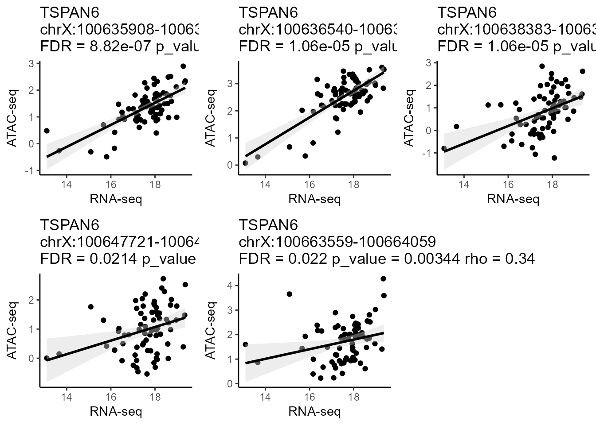
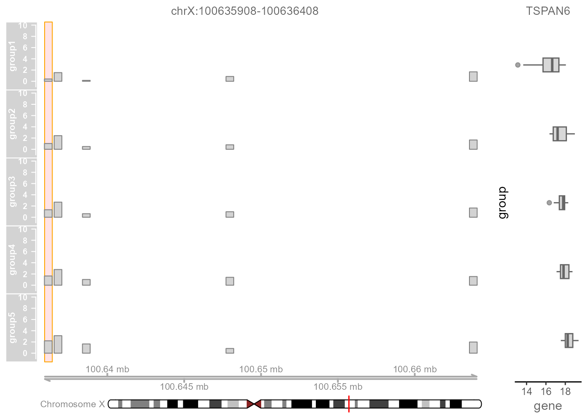

linkage in Rstudio
LinkageR.Rmd1.Create Linkage Object
The chromatin accessibility data is a normalized bulk ATAC-seq count matrix, which a prior count of 5 is added to the raw counts, then put into a “counts per million”, then log2 transformed, then quantile normalized. The gene expression data is a normalized bulk RNA-seq count matrix, which is log2(fpkm+1) transformed. Two tab-delimited text/csv input files (chromatin accessibility matrix and gene expression matrix) are required before running Linkage. The gene expression matrix file is a tab-delimited multi-column data matrix, which the first column represents gene symbols and the following columns represent normalized or raw expression levels of genes for each sample. The chromatin accessibility matrix file is a tab-delimited multi-column data matrix as well, which the first three columns represent chromosome name, start coordinate on the chromosome and end coordinate on the chromosome of the peaks respectively; the remaining columns of the chromatin accessibility matrix file represent normalized or raw chromatin accessibility levels of peaks for each sample. Each element of ready-to-analysis files will appear in Chromatin Accessibility Matrix panel and Gene Expression Matrix panel.
library(linkage)
library(LinkageData)
ATAC.seq <- BreastCancerATAC()
RNA.seq <- BreastCancerRNA()
LinkageObject <-
CreateLinkageObject(
ATAC_count = ATAC.seq,
RNA_count = RNA.seq,
Species = "Homo",
id_type = "ensembl_gene_id"
)
LinkageObject## An LinkageObject
## 59161 gene 215920 peak
## Active gene: 0
## Active peak: positive peak 0 negetive peak 0
## Active TF: 02.Regulatory Peaks Search
Regulatory Peaks Search allows users to detect all potential regulatory DNA regions for specific genes. When given an input gene and targeting DNA regions, Linkage will automatically perform canonical correlation analysis between each quantitative chromatin accessibility measure in the region and the quantitative expression level of the gene across all samples. Users can easily adjust the region of interest and customize the correlation algorithm (Spearman / Pearson / Kendall). Then, all the statistically significant results are listed in the Potential Cis-regulatory Regions panel. With clicking on a specific region of this panel, users can view the scatter plot of quantitative chromatin accessibility and gene expression from the Correlation Plot panel. The rho and FDR for correlation analysis also be shown on the scatter plot.
gene_list <- c("TSPAN6", "CD99", "KLHL13")
LinkageObject <-
RegulatoryPeak(
LinkageObject = LinkageObject,
gene_list = gene_list,
genelist_idtype = "external_gene_name"
)
CorrPlot(LinkageObject, gene = "TSPAN6")
3.Regulatory Peaks Visualization
Regulatory Peaks Visualization allows users to visualize the coverage of mapped ATAC-seq reads around a given specific regulatory peak, as well as the corresponding quantitative expression of the target gene of this regulatory peak. Users initially select a regulatory peak that obtained from the Regulatory Peaks Detection Module. Linkage then categorizes samples into five groups based on the quantitative chromatin accessibility of the specific regulatory peak, ranging from low to high for each individual sample. The coverage track of mapped ATAC-seq reads and the boxplot of the target gene for each group will be shown simultaneously.
TrackPlot(
LinkageObject,
Geneid = "TSPAN6",
peakid = "chrX:100635908-100636408",
Species = "Homo"
)
4.Regulatory Peaks Annotation
Regulatory Peaks Annotation allows users to visualize the annotation of the predicational regulatory peaks from Linkage.Linkage will perform the annotation of all predicational regulatory peaks in terms of genomic location features, which includes whether the peak is in the TSS, Exon, 5’ UTR, 3’ UTR, Intronic or Intergenic and the position and strand information of the nearest gene of the peaks. To effectively visualize the overlaps and distribution in annotation for peaks, Linkage also produces the upsetplot that adopting from the ChIPseeker package.
LinkageObject <- PeakAnnottation(LinkageObject, Species = "Homo")
AnnoUpsetPlot(LinkageObject = LinkageObject)
5.Regulatory Network
Regulatory Network helps users to visualize GRNs that nodes are genes and corresponding cis-regulatory elements，which inferred from previous analysis of Linkage. First, users can input a list of interested genes or upload a gene-list file that obtained from the previous analysis. Then users can adjust a series of parameters that related to building the GRN, including types of gene symbols, calculation methods and thresholds of interactions between the nodes (edges of the GRNs). Linkage will perform canonical correlation analysis of quantitative expression level between each interested gene and their potential cis-regulatory elements. The significant calculation results of correlation analysis are shown in the Gene-TF Table panel. Meanwhile, Linkage produces the corresponding informatic and interactive GRN that adopting from the visNetwork package. Users can further easily change network layouts, select subnetworks, and save the GRN as spreadsheets with interaction score or plots.
LinkageObject <-
MultipleMotifAnalysis(LinkageObject = LinkageObject,
Species = "Homo",
TF_cor_method = "pearson")
LinkageObject <-
CreateNetworkObject(
LinkageObject = LinkageObject,
genelist_idtype = "entrezgene_id",
filter_col = "FDR",
filter_value = 0.01
)
BuildNetwork(LinkageObject)